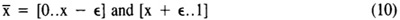
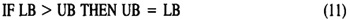

by Abraham Kandel
CRC Press, CRC Press LLC
ISBN: 084934297x Pub Date: 11/01/91
|
|
Fuzzy Expert Systems
by Abraham Kandel CRC Press, CRC Press LLC ISBN: 084934297x Pub Date: 11/01/91 |
| Previous | Table of Contents | Next |
Suppose we have the following sentence:
The 3 key words are color, product and green. The CF is 1 (since the data was provided by the user) and the RN is 0 (again, since the data is provided by the user). The lower and upper bounds are values which describe K3. Since K3 is not a number, LB1 = 1, UB1 = 1, LB2 = UNDEF and UB2 = UNDEF. Thus, the compiled sentence will be stored on the blackboard as
| K1 | K2 | K3 | LB1 | UB1 | LB2 | UB2 | CF | RN |
|---|---|---|---|---|---|---|---|---|
| color | product | green | 0 | 0.99 | UNDEF | UNDEF | 1 | 0 |
Assume we have the following sentence:
The color of the product is not green.
Here the key word not is present in the data. The negation creates two intervals such that:

Using Equation 10 we can evaluate the new LBs and UBs and compile the sentence to look like (let ∈ = 0.01):
| K1 | K2 | K3 | LB1 | UB1 | LB2 | UB2 | CF | RN |
|---|---|---|---|---|---|---|---|---|
| color | product | green | 0 | 0.99 | UNDEF | UNDEF | 1 | 0 |
We set LB2 and UB2 to be UNDEF since they fall outside the interval [0,1].
Consider the following sentence:
The color of the product is almost green.
We really don’t know the meaning of almost green but, mathematically, we can represent it. Almost is an adjective and, therefore, has a numerical range (see Appendix A). Since green is not a number we assign the value 1 to it. Now we can find the values for almost green
LB1 (ALMOST GREEN) = 0.9
UB1 (ALMOST GREEN) = 0.9
The upper bound of almost green is 0.9 because UB (ALMOST GREEN) = 1 - 1 = 0. But since LB > UB (logically inconsistent) we establish the following:

Thus, the compiled data is:
| K1 | K2 | K3 | LB1 | UB1 | LB2 | UB2 | CF | RN |
|---|---|---|---|---|---|---|---|---|
| color | product | green | 0.9 | 0.9 | UNDEF | UNDEF | 1 | 0 |
Suppose we have the following data sentence:
The age of Tom is 20.
In this case we have only two key words and a number. First we translate the value 20 years old by mapping it to a value in the range [0,1]. (see Appendix B). Thus, the value corresponding to 20 years old is 0.16. Since K3 does not exist (empty) the FC understands that the LB and the UB are mappings from the actual numbers to the grade of membership. Thus, the compiled sentence will be:
| K1 | K2 | K3 | LB1 | UB1 | LB2 | UB2 | CF | RN |
|---|---|---|---|---|---|---|---|---|
| age | Tom | 0.16 | 0.16 | UNDEF | UNDEF | 1 | 0 |
Again, the interpretation of the table above is: We are certain (CF = 1) that the age of Tom is 20 years old. The CF = 1 and the RN = 0 came from the fact that the data was provided by the user.
Consider the following data line:
The age of Tom is more or less 20.
First we have to interpret more or less 20 years old (using Appendix A):
LB(more orless 20 years old) = 18 years old
UB(more or less 20 years old) = 22 years old
Now we can use Appendix B to map the actual numbers into the range [0,1].
LB(18) = 0.15
UB(22) = 0.18
Again, since K3 does not exist, the LB and the UB represent the mappings from the actual numbers to the range [0,1]. Thus, the compiled data is:
| K1 | K2 | K3 | LB1 | UB1 | LB2 | UB2 | CF | RN |
|---|---|---|---|---|---|---|---|---|
| age | Tom | 0.15 | 0.18 | UNDEF | UNDEF | 1 | 0 |
In the next case we establish the rules of interpretation about the key word not. Assume we have the following data sentence:
The age of Tom is not 18.
Using Appendix B we can evaluate the grade of membership of age 18 (which is 0.15). Thus, using Equation 10 we have
| K1 | K2 | K3 | LB1 | UB1 | LB2 | UB2 | CF | RN |
|---|---|---|---|---|---|---|---|---|
| age | Tom | 0 | 0.14 | 0.16 | 1 | 1 | 0 |
The last case combines all cases discussed above. Consider the following data line:
The age of Tom is not more or less 20.
The first step is to find the range of more or less 20 (using Appendix A):
LB(MORE OR LESS 20 YEARS OLD) = 18 YEARS OLD
UB(MORE OR LESS 20 YEARS OLD) = 22 YEARS OLD
Next we use Appendix B to find the grade of membership of the ages found above:
χ(18) = 0.15
χ(22) = 0.18
Therefore the compiled data will be:
| K1 | K2 | K3 | LB1 | UB1 | LB2 | UB2 | CF | RN |
|---|---|---|---|---|---|---|---|---|
| age | Tom | 0 | 0.14 | 0.19 | 1 | 1 | 0 |
Thus, for any Type 1 sentence the compiler performs the evaluation as described above, placing on the blackboard the results from that evaluation. Next we discuss the evaluation of sentences of Type 2.
| Previous | Table of Contents | Next |